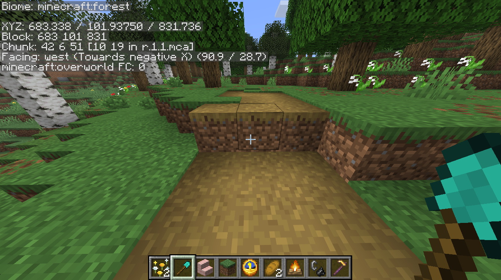
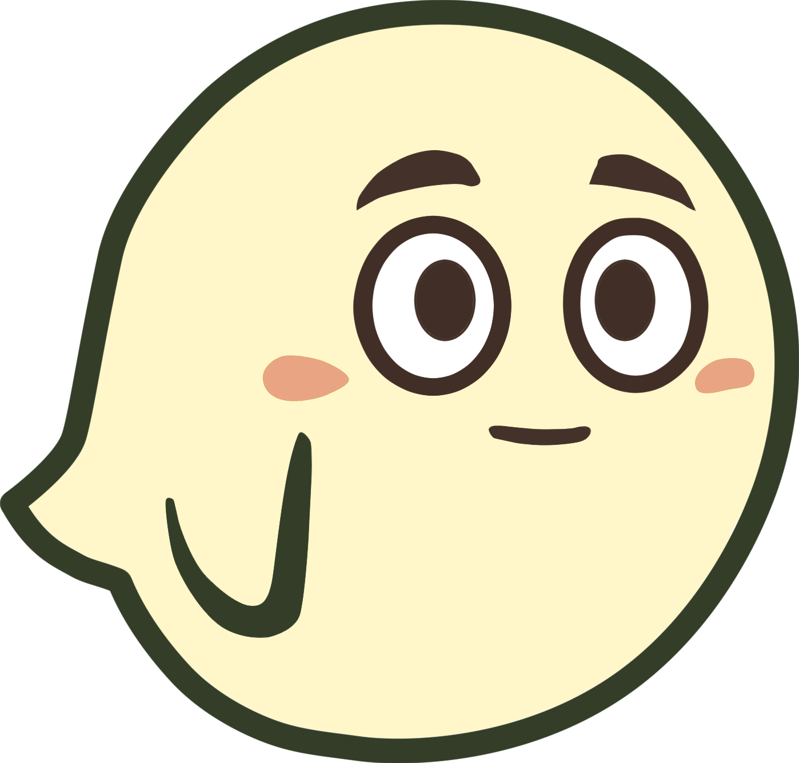

<!doctype html>
<html lang="ja">
<meta charset="utf-8">
<meta name="viewport" content="width=device-width,initial-scale=1">
<title>ドギド — いつもの居場所</title>
<style>
  *{box-sizing:border-box}[hidden]{display:none!important}body{margin:0;background:#f4f0e5;color:#363b2b;font-family:system-ui,-apple-system,"Hiragino Sans",sans-serif}
  main{max-width:1400px;margin:auto;padding:32px}header{display:flex;justify-content:space-between;align-items:center;gap:24px;margin-bottom:24px}
  h1{font-size:25px;font-weight:650;margin:5px 0 8px}p{margin:0;color:#737464;font-size:14px;line-height:1.8}.eyebrow{font-size:11px;letter-spacing:.14em;color:#8a8069}
  .badge{font-size:12px;border:1px solid #d6d0be;border-radius:24px;padding:8px 14px;white-space:nowrap}
  .workspace{display:grid;grid-template-columns:minmax(0,1fr) 224px;gap:24px;align-items:start}
  .stage{position:relative;container-type:inline-size;overflow:hidden;line-height:0;background:#22271f;border-radius:12px;box-shadow:0 8px 28px #292d2520}
  .world{display:block;width:100%;height:auto}.character{position:absolute;width:9%;left:2.5%;bottom:4%;pointer-events:none;line-height:0;z-index:2}.character img{width:100%;height:auto;display:block}
  .scroll{position:absolute;right:1.5%;bottom:10.5%;width:26.5%;height:74%;opacity:0;pointer-events:none;filter:drop-shadow(0 3px 5px #10120c55);line-height:normal}
  .scroll.is-visible{opacity:1}.scroll.on-left{left:1.5%;right:auto}
  .mount{position:absolute;inset:0 2%;display:flex;flex-direction:column;background:#aaa993;background-image:repeating-linear-gradient(90deg,#ffffff09 0 1px,transparent 1px 3px)}
  .mount-top{height:14%;flex-shrink:0;background:#c3c1ad;border-bottom:1px solid #77765b24}
  .mount-bottom{height:9%;flex-shrink:0;background:#c3c1ad;border-top:1px solid #77765b24}
  .paper{flex:1;min-height:0;margin:0 4%;padding:6% 4%;background:#f5f0de;background-image:linear-gradient(90deg,#887c5d0a,transparent 12%,#ffffff24 60%,#887c5d09);box-shadow:inset 0 0 8px #8477520d}
  .verse{height:100%;display:flex;flex-direction:row-reverse;justify-content:space-evenly;color:#27291f;font-family:"Hiragino Mincho ProN","Yu Mincho",serif;font-size:3.5cqw;font-weight:600;line-height:1.2;letter-spacing:.035em}
  .verse span{writing-mode:vertical-rl;text-orientation:upright;white-space:nowrap}.verse span:nth-child(2){padding-top:.65em}.verse span:nth-child(3){padding-top:1.45em}
  .verse span.edit-selected{outline:3px solid #51341d;outline-offset:3px;background:#f4dab0}
  .edit-targets{height:100%;display:flex;align-items:center;justify-content:center;gap:5%;padding:2% 5%;pointer-events:auto}
  .edit-targets button{width:28%;height:90%;padding:0;border:1px solid #6d6854;border-radius:2px;background:#faf5e5;color:#302b21;font-size:clamp(14px,2.4cqw,29px);font-weight:650;line-height:1}
  .edit-targets button[aria-pressed=true]{border:3px solid #51341d;background:#e99b36;color:#302b21;box-shadow:0 0 0 1px #faf5e5}
  .edit-targets button:focus-visible{outline:3px solid #1465a0;outline-offset:2px}
  .selection-caption{height:100%;display:flex;align-items:center;justify-content:center;font-size:clamp(11px,1.6cqw,18px);font-weight:650;color:#302b21;white-space:nowrap}
  .edit-demo{margin-bottom:20px;padding-bottom:18px;border-bottom:1px solid #ded9c9}.edit-demo h2{margin-bottom:10px}.edit-demo .note{margin-top:10px}.edit-demo button:disabled{opacity:.45;cursor:not-allowed}
  .edit-feedback{min-height:1.8em;font-size:12px;margin-top:8px}.edit-intent{width:100%;font-size:14px;font-weight:650}.edit-demo .check{margin:10px 0 0}
  .scroll:before,.scroll:after{content:"";position:absolute;left:0;width:100%;z-index:1;background:linear-gradient(#6a6050,#494335);border-radius:3px}
  .scroll:before{top:-1px;height:3px;left:2%;width:96%}.scroll:after{bottom:-2px;height:6px}
  .mode-switch{margin:0 0 18px!important}.mode-switch button{flex:1}.settings-group{border-top:1px solid #ded9c9;margin-top:18px;padding-top:16px}.settings-group summary{cursor:pointer;font-size:13px}
  .verse-input{display:block;width:100%;font:inherit;font-size:14px;border:1px solid #d9d5c5;border-radius:5px;background:#fffdf7;color:inherit;padding:7px}
  .float{animation:float 3.8s ease-in-out infinite}@keyframes float{0%,100%{transform:translateY(0)}50%{transform:translateY(-5px)}}
  @media(prefers-reduced-motion:reduce){.float{animation:none}.scroll{transition:none}}
  aside{background:#fffcf4;border:1px solid #ded9c9;padding:20px;border-radius:12px}h2{font-size:15px;margin:0 0 20px}
  label{display:block;font-size:13px;margin:20px 0 8px}.value{float:right;color:#797663;font-variant-numeric:tabular-nums}input[type=range]{width:100%;accent-color:#758260}
  .buttons{display:flex;flex-wrap:wrap;gap:6px;margin:14px 0}button{font:inherit;font-size:12px;padding:8px;border:1px solid #d9d5c5;background:#fffdf7;border-radius:7px;cursor:pointer;color:inherit;white-space:nowrap}button:hover,button[aria-pressed=true]{background:#e5ead8;border-color:#87946e}
  .check{display:flex;gap:8px;align-items:center;font-size:13px}input[type=checkbox]{accent-color:#758260}.note{font-size:12px;margin-top:22px;color:#898572}
  footer{display:flex;gap:30px;justify-content:space-between;padding-top:17px}footer p{font-size:12px}.future{margin-top:28px;padding-top:20px;border-top:1px solid #ddd7c8;font-size:13px;line-height:1.8;color:#777765}
  @media(max-width:780px){main{padding:16px}.workspace{grid-template-columns:1fr}aside{display:block}header{align-items:start}.badge{display:none}footer{display:block}}
</style>
<main>
  <header><div><div class="eyebrow">DOKIDOKI DOGIDO / PLACEMENT STUDY 03</div><h1>ひと息ついて、一句。</h1><p>穏やかな時間だけ、すうっと。剣や盾の前に、読める大きさで。</p></div><span class="badge" id="mode-label">掛け軸の配置イメージ</span></header>
  <div class="workspace">
    <section aria-label="過去のプレイスクリーンショットを使った配置プレビュー">
      <div class="stage"><video class="world" id="gameplay" src="gameplay.mp4" autoplay loop muted playsinline aria-label="体力・満腹度・ホットバーを含む実プレイ録画"></video><div class="character" id="character"></div>
        <div class="scroll" id="scroll" role="group" aria-label="掛け軸の仮の句" aria-hidden="true"><div class="mount"><div class="mount-top"><div class="edit-targets" id="edit-targets" role="group" aria-label="直す場所を選択：上・中・下" hidden><button data-edit-line="1" aria-label="上の句を選択" aria-controls="verse-1" aria-pressed="false">上</button><button data-edit-line="2" aria-label="中の句を選択" aria-controls="verse-2" aria-pressed="false">中</button><button data-edit-line="3" aria-label="下の句を選択" aria-controls="verse-3" aria-pressed="false">下</button></div></div><div class="paper"><div class="verse" id="verse" aria-live="polite"><span id="verse-1">くわをもち</span><span id="verse-2">はたけのまえで</span><span id="verse-3">ひとやすみ</span></div></div><div class="mount-bottom"><div class="selection-caption" id="selection-caption" role="status" hidden></div></div></div></div>
      </div>
      <footer><p id="background-note">背景：9/12の実プレイ録画。体力・満腹度・ホットバーを含むゲーム画面全体。<br>録画の3〜60秒をループ。現在のゲームとの連動はありません。</p><p>絵：Dogido_nomal.png ／ 作者制作の太線原画・反転なし</p></footer>
    </section>
    <aside><div class="buttons mode-switch" aria-label="表示モード"><button data-mode="workshop" aria-pressed="true">掛け軸あり</button><button data-mode="normal" aria-pressed="false">終了・じわっと</button><button data-mode="danger" aria-pressed="false">危険・パッと</button></div>
      <div id="scroll-settings"><section class="edit-demo" aria-label="編集の表示を試す"><h2>句を直すとき</h2><button class="edit-intent" id="edit-intent" aria-pressed="false" aria-controls="edit-targets">句を直す</button><p class="note">音声指定の代わりに、掛け軸の「上・中・下」を押して試せます。</p><label class="check"><input id="edit-sound" type="checkbox" checked>操作音「ピッ」</label><form id="edit-form" hidden><label for="edit-replacement" id="replacement-label">置き換える言葉</label><input class="verse-input" id="edit-replacement" maxlength="7" autocomplete="off" disabled><div class="buttons"><button id="edit-apply" type="submit" disabled>表示に反映（仮）</button></div></form><p class="edit-feedback" id="edit-feedback" role="status"></p></section>
      <h2>掛け軸の置き場所</h2><button id="reveal">もう一度、浮かび上がる</button>
        <div class="buttons" aria-label="掛け軸の左右位置"><button data-side="right" aria-pressed="true">右下・剣側</button><button data-side="left" aria-pressed="false">左下・盾側</button></div>
        <label for="scroll-width">幅 <span class="value" id="scroll-width-value"></span></label><input id="scroll-width" type="range" min="24" max="38" step="0.5" value="26.5">
        <label for="scroll-bottom">下端から <span class="value" id="scroll-bottom-value"></span></label><input id="scroll-bottom" type="range" min="1" max="12" step="0.5" value="10.5">
        <label for="verse-size">文字の大きさ <span class="value" id="verse-size-value"></span></label><input id="verse-size" type="range" min="2.8" max="4" step="0.1" value="3.5">
        <details class="settings-group"><summary>仮の句を変えてみる</summary><label for="line-1">上五</label><input class="verse-input" id="line-1" value="くわをもち" maxlength="7"><label for="line-2">中七</label><input class="verse-input" id="line-2" value="はたけのまえで" maxlength="7"><label for="line-3">下五</label><input class="verse-input" id="line-3" value="ひとやすみ" maxlength="7"><p class="note">表示比較用の仮文です。保存・音数判定・音声連動はしません。</p></details>
      </div>
      <details class="settings-group" id="character-settings"><summary>ドギドの位置</summary><div class="buttons" aria-label="ドギドの配置候補"><button data-corner="bottom-left" aria-pressed="true">ドギド左下</button><button data-corner="top-right" aria-pressed="false">ドギド右上</button></div><div class="buttons" aria-label="大きさの候補"><button data-size="9">小さめ</button><button data-size="15">ふつう</button><button data-size="20">大きめ</button></div>
      <label for="size">大きさ <span class="value" id="size-value"></span></label><input id="size" type="range" min="6" max="28" step="0.5" value="9">
      <label for="right"><span id="horizontal-label">左端から</span> <span class="value" id="right-value"></span></label><input id="right" type="range" min="0" max="25" step="0.5" value="2.5">
      <label for="top"><span id="vertical-label">下端から</span> <span class="value" id="top-value"></span></label><input id="top" type="range" min="0" max="35" step="0.5" value="4">
      <label class="check"><input type="checkbox" id="motion" checked>ゆっくり、ホヨホヨ</label>
      <label class="check"><input type="checkbox" id="visible" checked>ドギドを表示する</label>
      <div class="buttons"><button id="reset">最初の位置へ</button></div>
      </details><details class="settings-group" open><summary>背景</summary><div class="buttons" aria-label="背景の候補"><button data-scene="video" aria-pressed="true">地上の動画</button><button data-scene="cave">洞窟の動画</button><button data-scene="day">昼・静止画</button><button data-scene="night">夜・静止画</button></div><button id="playback">動画を一時停止</button></details>
      <p class="note">平和な時に読む想定の見た目だけの試作です。現在のゲーム状態とは連動しません。</p>
    </aside>
  </div>
  <div class="future">飾り帯のない「草の草」を参考にした簡素な表装案。右から上五・中七・下五。<br>幅と文字の読みやすさ、現れ方を比較します。実際の句・修正・戦闘中断との連動は今後。</div>
</main>
<script>
const $=id=>document.getElementById(id);
let characterCorner='bottom-left';
function update(){for(const id of ['size','right','top']){$(id+'-value').textContent=$(id).value+'%'}const lowerLeft=characterCorner==='bottom-left';$('character').style.width=$('size').value+'%';$('character').style.left=lowerLeft?$('right').value+'%':'auto';$('character').style.right=lowerLeft?'auto':$('right').value+'%';$('character').style.bottom=lowerLeft?$('top').value+'%':'auto';$('character').style.top=lowerLeft?'auto':$('top').value+'%';$('horizontal-label').textContent=lowerLeft?'左端から':'右端から';$('vertical-label').textContent=lowerLeft?'下端から':'上端から';$('character').hidden=!$('visible').checked;$('pose').classList.toggle('float',$('motion').checked);document.querySelectorAll('[data-size]').forEach(b=>b.setAttribute('aria-pressed',String(b.dataset.size===$('size').value)));document.querySelectorAll('[data-corner]').forEach(b=>b.setAttribute('aria-pressed',String(b.dataset.corner===characterCorner)));}
document.querySelectorAll('[data-corner]').forEach(b=>b.addEventListener('click',()=>{characterCorner=b.dataset.corner;update();}));
for(const id of ['size','right','top','motion','visible'])$(id).addEventListener('input',update);document.querySelectorAll('[data-size]').forEach(b=>b.addEventListener('click',()=>{$('size').value=b.dataset.size;update()}));$('reset').addEventListener('click',()=>{$('size').value=9;$('right').value=2.5;$('top').value=4;$('motion').checked=true;$('visible').checked=true;update()});update();
function updateScroll(){for(const id of ['scroll-width','scroll-bottom','verse-size'])$(id+'-value').textContent=$(id).value+'%';$('scroll').style.width=$('scroll-width').value+'%';$('scroll').style.bottom=$('scroll-bottom').value+'%';$('verse').style.fontSize=$('verse-size').value+'cqw';for(let i=1;i<=3;i++)$('verse-'+i).textContent=$('line-'+i).value;}
for(const id of ['scroll-width','scroll-bottom','verse-size','line-1','line-2','line-3'])$(id).addEventListener('input',updateScroll);updateScroll();
function setMode(mode,replay=false){
  const shown=mode==='workshop';
  const scroll=$('scroll');
  const from=replay?0:Number(getComputedStyle(scroll).opacity);
  // Cancel entry/exit animations before danger hides the scroll in this frame.
  scroll.getAnimations().forEach(animation=>animation.cancel());
  scroll.classList.toggle('is-visible',shown);
  scroll.setAttribute('aria-hidden',String(!shown));
  scroll.inert=!shown;
  if(mode!=='danger'&&!matchMedia('(prefers-reduced-motion: reduce)').matches&&from!==Number(shown)){
    scroll.animate([{opacity:from},{opacity:Number(shown)}],{duration:1000,easing:shown?'ease-in-out':'ease-out'});
  }
  $('scroll-settings').hidden=!shown;
  $('character-settings').open=!shown;
  $('mode-label').textContent=shown?'掛け軸の配置イメージ':mode==='danger'?'危険時：掛け軸は即非表示':'終了時：掛け軸がじわっと消える';
  document.querySelectorAll('[data-mode]').forEach(button=>button.setAttribute('aria-pressed',String(button.dataset.mode===mode)));
  document.dispatchEvent(new CustomEvent('preview-mode-change',{detail:mode}));
}
document.querySelectorAll('[data-mode]').forEach(b=>b.addEventListener('click',()=>setMode(b.dataset.mode)));
document.querySelectorAll('[data-side]').forEach(b=>b.addEventListener('click',()=>{$('scroll').classList.toggle('on-left',b.dataset.side==='left');document.querySelectorAll('[data-side]').forEach(e=>e.setAttribute('aria-pressed',String(e===b)));}));
$('reveal').addEventListener('click',()=>setMode('workshop',true));
requestAnimationFrame(()=>requestAnimationFrame(()=>setMode('workshop')));
const video=$('gameplay');
function play(){video.play().catch(()=>{$('playback').textContent='動画を再生'});}
video.addEventListener('play',()=>{$('playback').textContent='動画を一時停止'});video.addEventListener('pause',()=>{$('playback').textContent='動画を再生'});
$('playback').addEventListener('click',()=>{if(video.paused)play();else video.pause()});
document.querySelectorAll('[data-scene]').forEach(b=>b.addEventListener('click',()=>{const scene=b.dataset.scene;const isVideo=scene==='video'||scene==='cave';video.hidden=!isVideo;$('world').hidden=isVideo;$('playback').hidden=!isVideo;if(isVideo){const src=scene==='cave'?'cave.mp4':'gameplay.mp4';if(video.getAttribute('src')!==src)video.src=src;play();$('background-note').textContent=scene==='cave'?'背景：9/12の洞窟録画。体力・満腹度・ホットバーを含む画面全体。録画の2〜42秒をループ。':'背景：9/12の地上録画。体力・満腹度・ホットバーを含む画面全体。録画の3〜60秒をループ。';}else{video.pause();$('world').src=scene+'-full.png';$('world').alt=scene==='day'?'ホットバー全体とシャベルが写った昼の画面':'ホットバー全体と盾が写った夜の画面';$('background-note').textContent='背景：過去のスクリーンショット全体。こちらはクリエイティブ時のため体力・満腹度は表示されていません。'}document.querySelectorAll('[data-scene]').forEach(e=>e.setAttribute('aria-pressed',String(e===b)))}));
</script>
<script src="edit-preview.js"></script>
</html>
